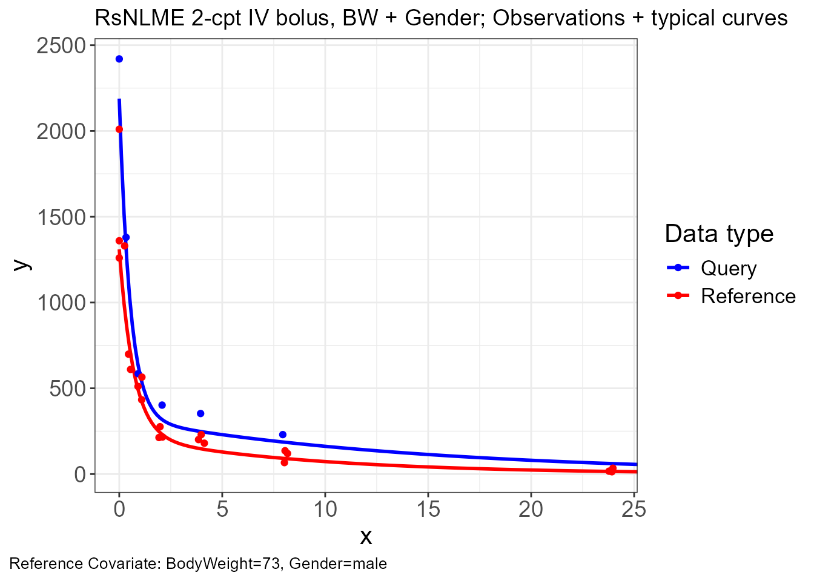
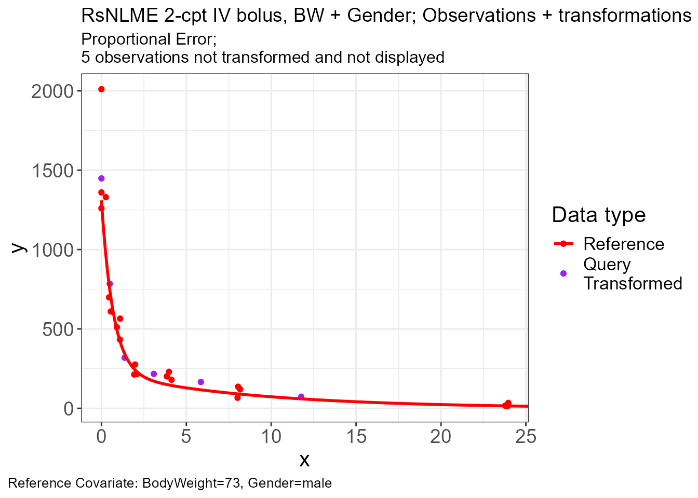
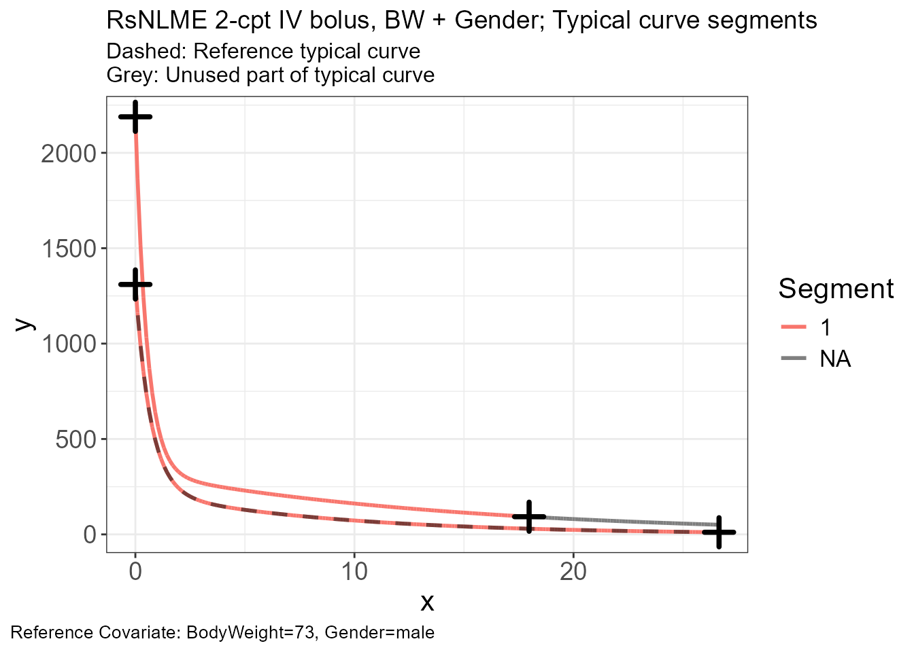
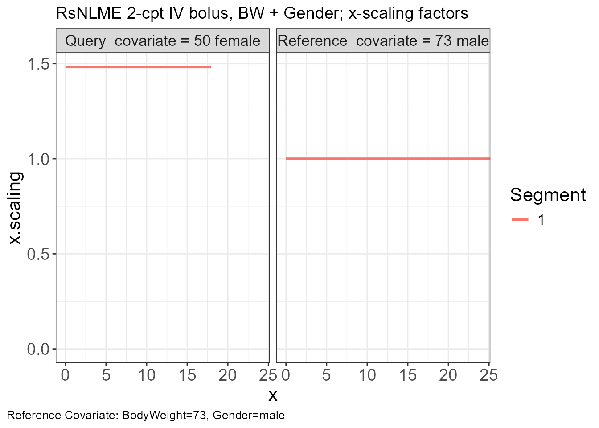
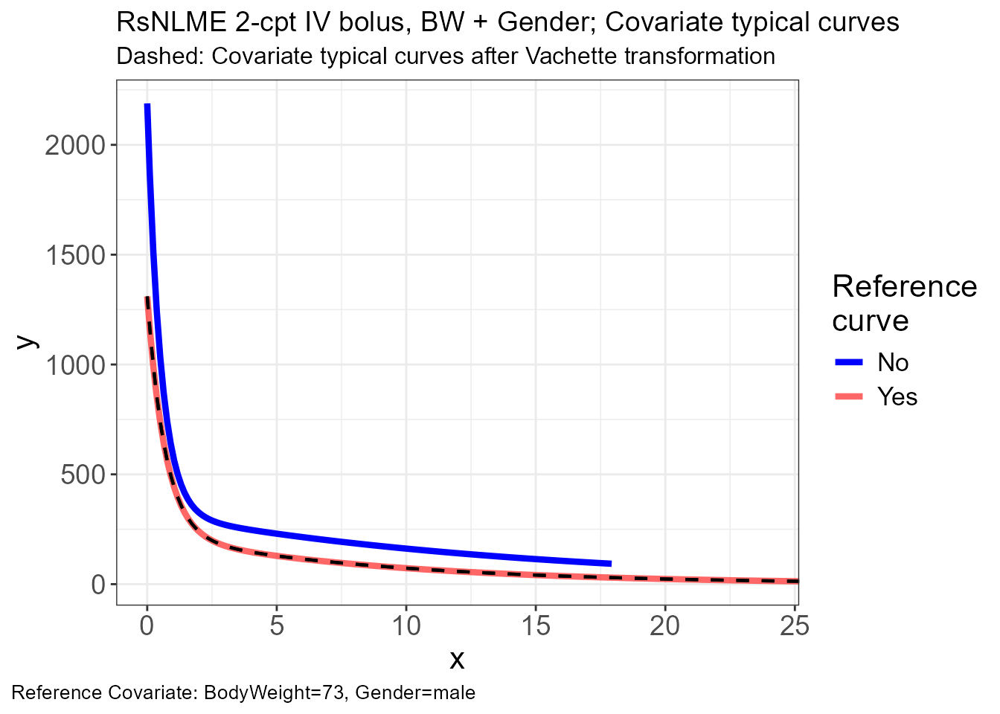
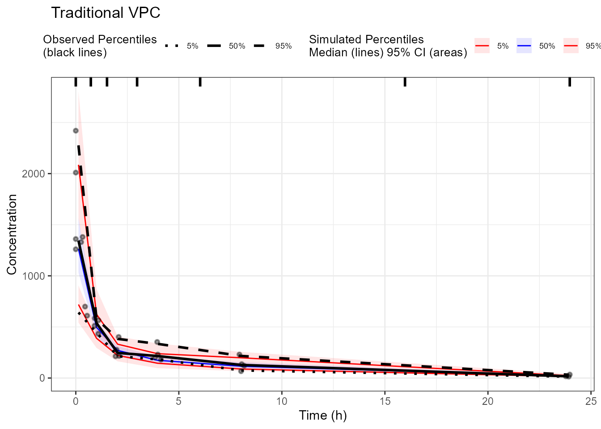
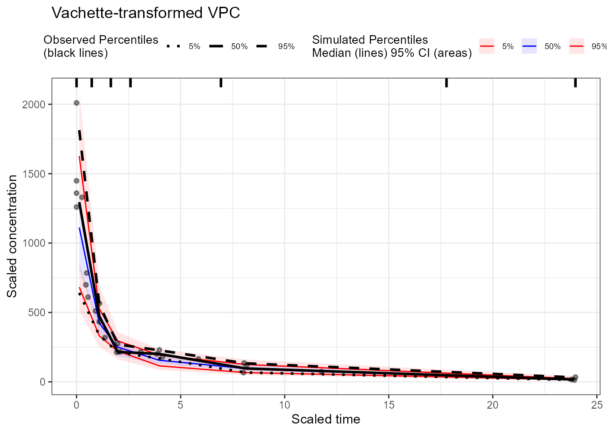

This vignette shows how to generate the three datasets that vachette::vachette_data()
requires (obs.data, typ.data,
sim.data) directly from a fitted Certara.RsNLME
model. It focuses on the trickiest piece: building
typ.data, the typical-curve table that contains one
trajectory per unique covariate combination present in the observed
data.
The model setup mirrors the conventions in the RsNLME Covariate
Models vignette; the simulation mechanics
(tableParams(), simmodel(),
NlmeSimulationParams()) follow the Simulation
in RsNLME vignette.
vachette_data() accepts three data frames (see ?vachette_data
for the full column reference):
| Dataset | Required columns | Source in this vignette |
|---|---|---|
obs.data |
ID, x (time),
OBS (DV), dosenr, plus covariate columns |
pkData (renamed) |
sim.data |
ID, x, OBS,
REP, dosenr, plus covariate columns |
simmodel() with replicates |
typ.data |
ID, x, PRED,
dosenr, plus covariate columns |
simmodel() with frozen IIV + synthetic
input dataset |
dosenr identifies a dose interval (single-dose data
here, so all rows get dosenr = 1). REP is the
replicate index in sim.data.
We use the built-in pkData (16 subjects, 2-cpt IV
bolus). Following the SCM-best result from the RsNLME covariate-model
vignette, we add BodyWeight as a continuous covariate on
V/Cl and additionally include
Gender as a categorical covariate on Cl to
demonstrate both covariate types.
workingDir <- file.path(tempdir(), "rsnlme_vachette")
dir.create(workingDir, recursive = TRUE, showWarnings = FALSE)
baseModel <- pkmodel(
numCompartments = 2,
data = pkData,
ID = "Subject", Time = "Act_Time",
A1 = "Amount", CObs = "Conc",
modelName = "rsnlme_vachette_base",
workingDir = workingDir
) %>%
addCovariate(
covariate = "BodyWeight",
type = "Continuous",
effect = c("V", "Cl"),
direction = "Forward",
center = "Median"
) %>%
addCovariate(
covariate = "Gender",
type = "Categorical",
effect = "Cl",
levels = c(0, 1),
labels = c("male", "female")
)
fitJob <- fitmodel(baseModel)
fitJob$Overall
#> Scenario RetCode LogLik -2LL AIC BIC nParm nObs nSub
#> <char> <int> <num> <num> <num> <num> <int> <int> <int>
#> 1: WorkFlow 1 -607.4505 1214.901 1238.901 1271.523 12 112 16
#> EpsShrinkage Condition
#> <num> <lgcl>
#> 1: 0.12993 NAobs.data from pkData
pkData already contains everything we need; only column
renaming and a dosenr flag are required.
obs <- pkData %>%
rename(ID = Subject, x = Act_Time, OBS = Conc) %>%
mutate(dosenr = 1L) %>%
select(ID, x, OBS, dosenr, BodyWeight, Gender, Age)
head(obs)
#> ID x OBS dosenr BodyWeight Gender Age
#> <num> <num> <num> <int> <num> <char> <num>
#> 1: 1 0.00 2010 1 73 male 22
#> 2: 1 0.26 1330 1 73 male 22
#> 3: 1 1.10 565 1 73 male 22
#> 4: 1 2.10 216 1 73 male 22
#> 5: 1 4.13 180 1 73 male 22
#> 6: 1 8.17 120 1 73 male 22sim.data via simmodel() with a
custom output table
For the simulated VPC dataset, we use simmodel() rather
than vpcmodel() so we can control exactly which columns
appear in the output. Putting the covariate names into
variablesList echoes them into the output table next to the
simulated CObs. keepSource = TRUE matches the
simulated time grid to the observed grid, which is what
vachette expects when comparing observed and simulated
trajectories.
simModel <- copyModel(
baseModel,
acceptAllEffects = TRUE,
modelName = "rsnlme_vachette_sim"
)
simTable <- tableParams(
name = "sim_replicates.csv",
variablesList = c("CObs", "C", "BodyWeight", "Gender"),
keepSource = TRUE,
forSimulation = TRUE
)
simParams <- NlmeSimulationParams(
numReplicates = 50,
seed = 1,
simulationTables = simTable
)
simJob <- simmodel(simModel, simParams)The simulation table is returned in the result list under its file
name (without extension). When the simulator writes a categorical
covariate to a table it uses the internal numeric code
(0 / 1) rather than the labels declared in
addCovariate(), and the replicate index is written under a
column literally named # repl. We define a small helper to
map the numeric codes back to "male" /
"female" so the covariate values match between
obs and sim:
recode_gender <- function(g) {
g <- as.character(g)
dplyr::case_when(
g %in% c("0", "male") ~ "male",
g %in% c("1", "female") ~ "female",
TRUE ~ g
)
}If you defined your categorical levels with a different mapping in
addCovariate(), adjustrecode_gender()(or write a similar helper) so the simulated and observed factor levels line up.
Now reshape the simulation output into the vachette schema:
sim_raw <- as.data.frame(simJob$sim_replicates)
sim <- sim_raw %>%
rename(REP = `# repl`, ID = id5, x = time, OBS = CObs) %>%
mutate(
dosenr = 1L,
Gender = recode_gender(Gender)
) %>%
filter(!is.na(OBS)) %>%
select(REP, ID, x, OBS, dosenr, BodyWeight, Gender)
head(sim)
#> REP ID x OBS dosenr BodyWeight Gender
#> 1 0 1 0.00 1565.0523 1 73 male
#> 2 0 1 0.26 1306.5094 1 73 male
#> 3 0 1 1.10 571.4460 1 73 male
#> 4 0 1 2.10 319.5886 1 73 male
#> 5 0 1 4.13 152.9584 1 73 male
#> 6 0 1 8.17 104.7707 1 73 maletyp.data (the tricky part)
typ.data is one typical trajectory per
unique covariate combination in obs.data. The strategy:
(unique covariate combination × dense time grid), with a
dose at t = 0.copyModel(..., acceptAllEffects = TRUE) to fix the
fitted thetas.randomEffect(..., isFrozen = TRUE, value = ~0) to
suppress IIV so the simulated trajectory is the
population prediction.dataMapping() + colMapping() to swap the
synthetic input onto the model.simmodel() with a tableParams() definition
that captures the central concentration C plus the
covariate columns.
unique_covs <- pkData %>%
distinct(BodyWeight, Gender) %>%
mutate(SyntheticID = 1000000L + row_number())
t_grid <- c(0, seq(0.1, max(pkData$Act_Time, na.rm = TRUE) * 1.1,
length.out = 199))
typ_input <- unique_covs %>%
tidyr::expand_grid(Act_Time = t_grid) %>%
mutate(
Subject = SyntheticID,
Amount = ifelse(Act_Time == 0, 25000, NA_real_),
Conc = NA_real_
) %>%
select(Subject, Act_Time, Amount, Conc, BodyWeight, Gender)
cat("unique covariate combinations:", nrow(unique_covs),
" time grid points:", length(t_grid),
" synthetic rows:", nrow(typ_input), "\n")
#> unique covariate combinations: 13 time grid points: 200 synthetic rows: 2600copyModel(acceptAllEffects = TRUE) carries the fitted
thetas onto a new (still built-in, not textual) model. We then freeze
every random effect at variance 0 so each synthetic ID’s
realization is exactly η = 0 and the simulated
C is the population prediction (PRED).
typModel <- copyModel(
baseModel,
acceptAllEffects = TRUE,
modelName = "rsnlme_vachette_typ"
) %>%
randomEffect(
effect = c("nV", "nCl", "nV2", "nCl2"),
value = rep(0, 4),
isFrozen = TRUE
) %>%
dataMapping(typ_input) %>%
colMapping(c(
id = "Subject",
time = "Act_Time",
A1 = "Amount",
CObs = "Conc"
))
randomEffect()requires a built-in (non-textual) model, so call it before anyeditModel()step. See?Certara.RsNLME::randomEffect.
typTable <- tableParams(
name = "typ_curves.csv",
timesList = t_grid,
variablesList = c("C", "BodyWeight", "Gender"),
forSimulation = TRUE
)
typParams <- NlmeSimulationParams(
numReplicates = 1,
seed = 1,
simulationTables = typTable
)
typJob <- simmodel(typModel, typParams)
typ_raw <- as.data.frame(typJob$typ_curves)
typ <- typ_raw %>%
rename(ID = id5, x = time, PRED = C) %>%
mutate(
dosenr = 1L,
Gender = recode_gender(Gender)
) %>%
select(ID, x, PRED, dosenr, BodyWeight, Gender)
stopifnot(nrow(typ) == nrow(unique_covs) * length(t_grid))
head(typ)
#> ID x PRED dosenr BodyWeight Gender
#> 1 1000001 0.0000000 1309.9830 1 73 male
#> 2 1000001 0.1000000 1161.3947 1 73 male
#> 3 1000001 0.2340505 992.6181 1 73 male
#> 4 1000001 0.3681010 853.0392 1 73 male
#> 5 1000001 0.5021515 737.5219 1 73 male
#> 6 1000001 0.6362020 641.8350 1 73 maleFor a clean demonstration we filter the three datasets to one
reference combination and one query
combination with semi_join(). This keeps the
vachette plot panel readable: one typical reference curve, one typical
query curve, and the observations / simulations that belong to those two
combinations.
The reference combination must exist in typ.data and
obs.data — vachette_data() matches it by exact
equality on the named covariate columns. Here we pick
(BodyWeight = 73, Gender = "male") as the reference
(Subject 1’s covariates) and
(BodyWeight = 50, Gender = "female") as the query (Subject
10’s covariates).
ref_combo <- tibble(BodyWeight = 73, Gender = "male")
query_combo <- tibble(BodyWeight = 50, Gender = "female")
keep_combos <- bind_rows(ref_combo, query_combo)
obs_pair <- obs %>% semi_join(keep_combos, by = c("BodyWeight", "Gender"))
typ_pair <- typ %>% semi_join(keep_combos, by = c("BodyWeight", "Gender"))
sim_pair <- sim %>% semi_join(keep_combos, by = c("BodyWeight", "Gender"))
vd <- vachette_data(
obs.data = obs_pair,
typ.data = typ_pair,
sim.data = sim_pair,
covariates = c(BodyWeight = ref_combo$BodyWeight,
Gender = ref_combo$Gender),
model.name = "RsNLME 2-cpt IV bolus, BW + Gender"
) %>%
apply_transformations()
p.obs.ref.query(vd)
p.vachette(vd)

p.scaling.factor(vd)

The full
obs,typ, andsimdatasets built earlier still work as direct inputs tovachette_data(); the filter above is purely for visual clarity. To compare additional covariate combinations, just add more rows tokeep_combos.
vd$obs.all and vd$sim.all carry both the
original axes (x, y) and the
vachette-transformed axes (x.scaled,
y.scaled). Pass either set to tidyvpc to
compare a binned VPC on the original axes to one on the vachette-aligned
axes.
obs_trans <- vd$obs.all
sim_trans <- vd$sim.all
t_centers <- c(0.25, 1, 2, 4, 8, 16, 24)
vpc_traditional <- observed(obs_trans, x = x, y = y) |>
simulated(sim_trans, x = x, y = y) |>
binning(bin = "centers", centers = t_centers) |>
vpcstats()
vpc_vachette <- observed(obs_trans, x = x.scaled, y = y.scaled) |>
simulated(sim_trans, x = x.scaled, y = y.scaled) |>
binning(bin = "centers", centers = t_centers) |>
vpcstats()
plot(vpc_traditional) +
labs(title = "Traditional VPC", x = "Time (h)", y = "Concentration")
plot(vpc_vachette) +
labs(title = "Vachette-transformed VPC",
x = "Scaled time", y = "Scaled concentration")
The pattern generalizes to any RsNLME covariate model:
simmodel() with
tableParams(variablesList = c(<observation>, <covariates...>), keepSource = TRUE)
for sim.data.(unique covariate combinations × dense time grid), freeze
IIV via randomEffect(isFrozen = TRUE, value = 0), and run
simmodel() with
tableParams(variablesList = c(<concentration>, <covariates...>))
for typ.data.predcheck0 from
vpcmodel()) for obs.data.vachette_data() and apply
transformations.